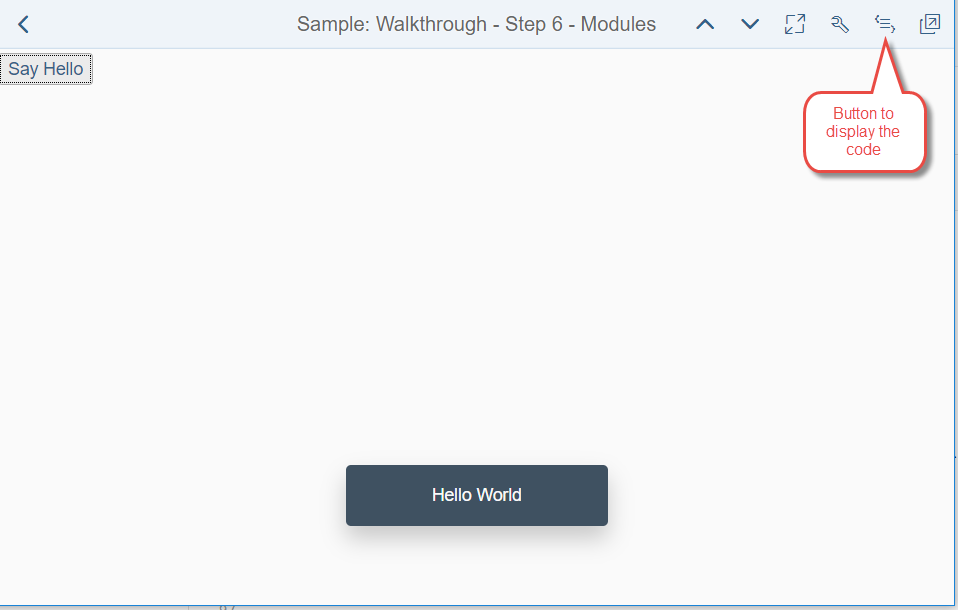

Get Ready
All you need to develop Web apps with OpenUI5 is a development environment and a browser. Chose between SAP Web IDE in the cloud for maximum convenience or set up your local development environment or maximum flexibility.
Both options are described in our documentation.
Start Coding
Now it is time to build your first OpenUI5 app. To start simple, we load OpenUI5 from our CDN and place a sap.m.Text and a sap.m.MessageToast into the HTML body. You can try it out on the Hello World samples page in the OpenUI5 Demo Kit. This is how it works: when you click on the button "Say Hello", the message "Hello World" will appear. You can display the code by clicking on the button to display the code as indicated in the screenshot below on the right side at the top of the screen.
You can see that the code is spead over three files:
- index.html
- App.controller.js
- App.view.xml

Dig Deeper
Have a look at our tutorials and demo apps in the OpenUI5 Demo Kit:Want more?
- Try our free openSAP course Developing Web Apps with SAPUI5 - also applicable for OpenUI5.
- Engage on stackoverflow.com, the SAP Community forum, and Slack.
- Watch videos on YouTube
- Check out many Samples